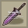

ดาบม่วง

ゲリエールブレードLv.90
ทนทาน : 35
ทุบ : 45
ฟัน : 95
แทง : 91
M Def : 10
Weapon Create Lv.8
1 ドミニオン鋼の刀身 + 1 Steel Holder + 10 Great String + 1 Purple Eye Bead
 ドミニオン鋼の刀身
ドミニオン鋼の刀身
Weapon Create Lv.9
5 Black Stone3 + 1 Great Plate + 10 Hammer + 1 Salamander Ruby
คือว่าไอเทมที่ชื่อ Hammer กับGreat String ที่เอาไว้ทำดาบ90 ใหม่ ลองไปหาดูเเล้ว มีเเต่ Great Strap เเล้วก็ Steel Hammer ถามเพื่อนๆบอกไม่เคยเห็นเเล้วก็ไม่เคยได้ยินชื่อเลย ส่วนไอเทมอื่นๆ ก็หาได้ไม่มีปัญหา เลยอยากถามผู้รู้ว่าไอเทม 2ชิ้นนี้มันมีจริงหรือเปล่า ถ้ามีลงรูปให้หน่อยก็ดีครับ เพราะผมแปลกใจตรงที่ มันเป็นอาวุธประเถทดาบเเต่ทำไมถึงใช้ Hammer ผสม ทั้งๆที่ควรจะเป็น Sword มากกว่า(จากการสังเกตุ)

ปล.แปลผิดป่าวหว่าหรือมีใครกั๊กชื่อไอเทม??.


 มานบั้คเพราะ ดาบมานสีY รึป่าว เหอๆๆๆๆขำๆ
มานบั้คเพราะ ดาบมานสีY รึป่าว เหอๆๆๆๆขำๆ